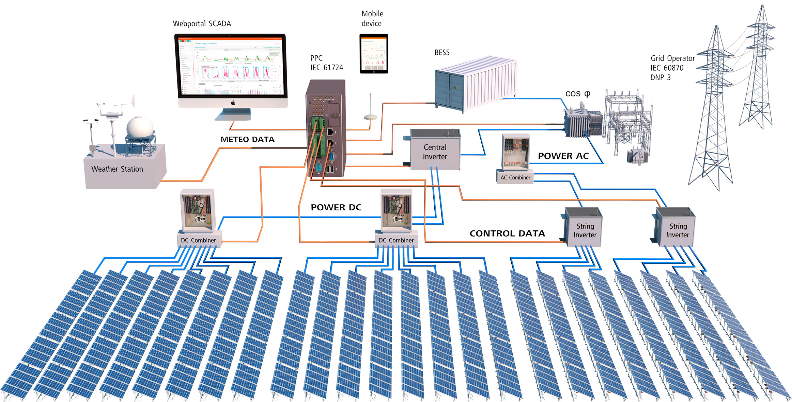

📝 Journal Papers
■ Ghaedi, P., Eskandari, A., Nedaei, A., Habibi, M., Parvin, P., & Aghaei, M. (2024).
Ensemble LVQ Model for Photovoltaic Line-to-Line Fault Diagnosis Using K-Means Clustering and AdaGrad.
Energies, 17(21), 5269.
🔗 DOI
■ Ghaedi, P., Eskandari, A., Nedaei, A., Habibi, M., Parvin, P., & Aghaei, M.
Logically Optimized and Probabilistic Integrated Photovoltaic Fault Finding Package based on Machine Learning.
(Under review – Energy Reports)
🔗 SSRN Preprint
■ Mamershafai, R., Ghaedi, P., Moradi Sizkouhi, A., Talebi, S., & Aghaei, M.
Bird Fault Detection in Photovoltaic Panels via Stable Diffusion-Generated Data and Optimized Deep Learning Models (In preparation).
🔗 Additional Explanation
■ Ghaedi, P., Eskandari, A., Nedaei, A., & Aghaei, M.
Sequential Fault Detection and Resistance Estimation in PV Arrays Using Deep Q-Network and Bayesian Neural Networks (In preparation).
🔗 Additional Explanation
🎤 Conference Papers
■ Nedaei, A., Eskandari, A., Salehpour, S., Ghaedi, P., & Aghaei, M.
AI in Smart Grids for Enhanced Renewable Energy Management: Part 1 – Techniques and Applications.
(Submitted – FES Conference 2025)
🔗 Additional Explanation
■ Nedaei, A., Eskandari, A., Salehpour, S., Ghaedi, P., & Aghaei, M.
AI in Smart Grids for Enhanced Renewable Energy Management: Part 2 – Challenges and Future Directions.
(Submitted – FES Conference 2025)
🔗 Additional Explanation